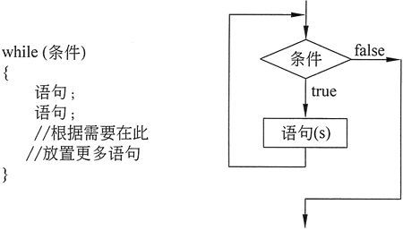
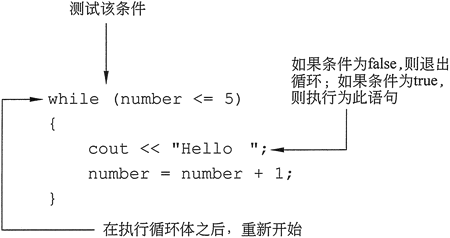
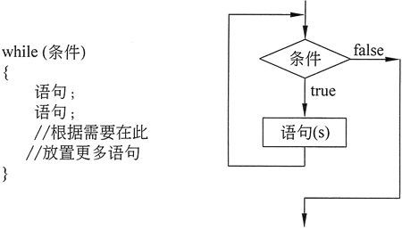
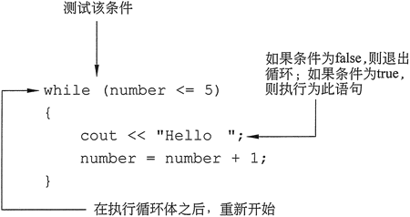

首页 > 编程笔记
C++ while（do-while）循环详解
while 循环有两个重要组成部分：
图 1 显示了 while 循环的一般格式，右侧流程图直观地描绘了其工作原理。

图 1 while 循环的语句结构及流程图
现在来看一看 while 循环的每个部分。第一行，有时称为循环头，由关键字 while 组成，后跟待测试的条件，括在括号中。条件由任何可被判断为 true 或 false 的表达式表示。接下来是循环体，它包含一个或多个 C++ 语句。
循环的工作原理是，首先判断条件表达式的值，如果它是真的，则循环体中的每个语句都被执行；然后，再次测试条件，如果条件表达式仍然为 true，则循环体中的每个语句将再次被执行。如此循环往复，直到条件表达式被判断为 false。
请注意，与 if 语句一样，在有条件执行的主体中的每个语句都以分号结尾，但在括号中的条件表达式后面没有分号，这是因为 while 循环不完整，后面没有跟随的语句。而且，与 if 语句一样，当循环体包含两个或多个语句时，这些语句必须用大括号括起来。当循环的主体只包含一个语句时，可以省略括号。
基本上，while 循环就像是一个可以执行一遍又一遍的 if 语句。只要括号中的表达式为 true，则有条件执行的语句将不断重复。
下面的程序使用了 while 循环打印“Hello”字符串 5 次。

图 2 while 循环工作原理
循环的每一次执行称为迭代。以上示例中的循环将执行 5 次迭代，直至表达式“count<=5”被测试并且发现为 false，导致循环终止，然后程序继续执行该循环之后的语句。控制循环迭代次数的变量称为循环控制变量，在上面的例子中，count 就是循环控制变量。
例如，注意上面程序中变量 count 的定义：
如果循环没有停止的方式，则称为无限循环。无限循环将持续重复，直到程序中断，示例如下：
对于编译器来说，整个循环看起来就像下面这样：
与 while 循环一样，如果循环体中只有一个有条件执行的语句，则可以省略大括号。注意，do-while 循环必须在测试表达式的右括号后用分号终止。
除了外观形式，do-while 循环和 while 循环之间的区别是 do-while 是一个后测试循环，这意味着在循环结束时，也就是在每次迭代完成后，才测试其表达式。因此，即使测试表达式在开始时为 false，do-while 也至少要执行一次迭代。
例如，在以下 while 循环中，cout 语句根本不会执行：
- 进行 true 值或 false 值判断的表达式；
- 只要表达式为 true 就重复执行的语句或块；
图 1 显示了 while 循环的一般格式，右侧流程图直观地描绘了其工作原理。

图 1 while 循环的语句结构及流程图
现在来看一看 while 循环的每个部分。第一行，有时称为循环头，由关键字 while 组成，后跟待测试的条件，括在括号中。条件由任何可被判断为 true 或 false 的表达式表示。接下来是循环体，它包含一个或多个 C++ 语句。
循环的工作原理是，首先判断条件表达式的值，如果它是真的，则循环体中的每个语句都被执行；然后，再次测试条件，如果条件表达式仍然为 true，则循环体中的每个语句将再次被执行。如此循环往复，直到条件表达式被判断为 false。
请注意，与 if 语句一样，在有条件执行的主体中的每个语句都以分号结尾，但在括号中的条件表达式后面没有分号，这是因为 while 循环不完整，后面没有跟随的语句。而且，与 if 语句一样，当循环体包含两个或多个语句时，这些语句必须用大括号括起来。当循环的主体只包含一个语句时，可以省略括号。
基本上，while 循环就像是一个可以执行一遍又一遍的 if 语句。只要括号中的表达式为 true，则有条件执行的语句将不断重复。
下面的程序使用了 while 循环打印“Hello”字符串 5 次。
#include <iostream> using namespace std; int main() { int count = 1; while (count<= 5) { cout << "Hello "; count = count + 1; } cout << "\nThat's all!\n"; return 0; }程序输出结果：
Hello Hello Hello Hello Hello
That's all!
while (count<= 5)
该语句测试变量 count 以确定其值是否小于或等于 5。因为它确实小于 5，所以循环体（第 9 行和第 10 行）中的语句被执行：
cout << "Hello ";
count = count + 1;

图 2 while 循环工作原理
循环的每一次执行称为迭代。以上示例中的循环将执行 5 次迭代，直至表达式“count<=5”被测试并且发现为 false，导致循环终止，然后程序继续执行该循环之后的语句。控制循环迭代次数的变量称为循环控制变量，在上面的例子中，count 就是循环控制变量。
while 是一个预测试循环
while 循环是一个预测试循环。这意味着它会在每次迭代之前测试其状态。如果测试表达式为 false，则循环将永远不会迭代。如果要确保一个 while 循环至少执行一次，则必须初始化相关的数据，使测试表达式一开始即为 true。例如，注意上面程序中变量 count 的定义：
int count = 1;
count 变量被初始化为值 1。如果数字已经被初始化为大于 5 的值，则循环将永远不会执行，如下面的程序段所示：
int count = 6;
while (count <= 5)
{
cout << "Hello ";
count = count + 1;
}
无限循环
除极少数情况外，循环必须包括一种终止方式。这意味着循环中的某些内容必须最终使测试表达式为 false。在上面程序中，当表达式“count <= 5”变为 false 时，循环停止。如果循环没有停止的方式，则称为无限循环。无限循环将持续重复，直到程序中断，示例如下：
int count = 1;
while (count<= 5)
{
cout << "Hello ";
}
这是一个无限循环，因为它不包含更改 count 变量值的语句。每次测试表达式“count <= 5”时，count 的值都是 1。小心分号
通过在 while 循环的第一行之后意外地放置一个分号也可以创建无限循环，示例如下:
int count = 1;
while (count <= 5) ; //该分号是一个错误
{
cout << "Hello ";
count = count + 1;
}
因为编译器在发现开始语句块的大括号之前看见了第一行末尾的分号，所以它会在分号的位置结束循环。尤其是它会将分号前面丢失的语句解释为空语句，也就是什么都不做的语句，然后将 while 语句和它后面的任何内容断开。对于编译器来说，整个循环看起来就像下面这样：
while(count<= 5);
这个 while 循环将持续执行空语句，当然它永远不会执行任何操作。该程序似乎“陷入迷惘”，因为没有任何屏幕输出，也不会显示任何活动。不要忘记大括号
在编写循环语句时，如果有条件执行的语句是一个语句块，则不要忘记将所有的语句都包含在一组大括号中。如果大括号意外被忽略，则 while 语句有条件执行的仅仅是下一个语句，请看下面的代码示例：
int count = 1;
//该循环忘记使用大括号
while (count <= 5)
cout << "Hello ";
count = count + 1;
在这段代码中，只有一个语句，也就是 cout 语句，是在 while 循环的主体中。给变量 count 加 1 的语句不在循环体内，所以 count 的值保持为 1，循环测试条件永远为 true。循环将一遍又一遍地打印“Hello”字符串，直到用户停止程序。不要混清 == 与 =
循环的另一个常见陷阱是，在打算使用 == 运算符时，却意外地使用了 = 运算符。例如，以下示例就是一个无限循环，因为作为循环条件的测试表达式每次都给 remainder 赋值为 1，而不是测试 remainder 是否等于 1：
while (remainder = 1) //错误：条件表达式为赋值语句
{
cout << "Enter a number: ";
cin >> num;
remainder = num % 2;
}
请记住，任何非零值都将被判断为 true。do-while 循环
除了 while 循环之外，C++ 还提供了 do-while 循环。do-while 循环看起来类似于把一个 while 循环倒过来。图 3 显示了其格式和流程图，右侧流程图直观地描绘了其工作原理。与 while 循环一样，如果循环体中只有一个有条件执行的语句，则可以省略大括号。注意，do-while 循环必须在测试表达式的右括号后用分号终止。
除了外观形式，do-while 循环和 while 循环之间的区别是 do-while 是一个后测试循环，这意味着在循环结束时，也就是在每次迭代完成后，才测试其表达式。因此，即使测试表达式在开始时为 false，do-while 也至少要执行一次迭代。
例如，在以下 while 循环中，cout 语句根本不会执行：
int x = 1;
while (x < 0)
cout << x << endl;
但是在以下 do-while 循环中的 cout 语句将执行一次，因为 do-while 循环在迭代结束之前不会判断表达式 x<0：
int x = 1;
do
cout << x << endl;
while (x < 0);
如果要确保循环执行至少一次，则应使用 do-while 循环。关注公众号「站长严长生」，在手机上阅读所有教程，随时随地都能学习。内含一款搜索神器，免费下载全网书籍和视频。

微信扫码关注公众号